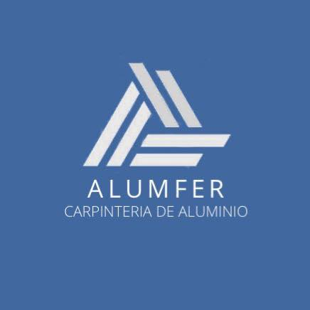

Fábrica de aberturas de aluminio a medida. Adrogué, Buenos Aires, desde 2010.
Diseño y desarrollo del sitio institucional: identidad digital, página de inicio, páginas por servicio y por localidad, y guías técnicas para clientes.
AlumferEl proyecto
El proyecto
Alumfer es una empresa familiar de la Zona Sur del Gran Buenos Aires. Fabrica e instala ventanas, puertas, postigones y cerramientos de aluminio a medida en su propio taller, sin intermediarios ni subcontratos.
El sitio tenía que presentar a la empresa con la seriedad de un fabricante: mostrar las obras terminadas, explicar las líneas y los vidrios que trabajan, y facilitar el pedido de presupuesto desde cualquier dispositivo.
Cliente
Alumfer, carpintería de aluminio
Rubro
Fabricación e instalación de aberturas
Ubicación
Av. San Martín 734, Adrogué
Trayectoria
Desde 2010 · más de 500 obras
Alcance
Diseño web, desarrollo, SEO local y contenidos
Año
2026
Sitio
alumfer.com.ar
Ventana corrediza, color símil maderaPuerta de abrir con paños de vidrioCerramiento de quinchoTecho de policarbonato
Fotografías de obra: Alumfer.
AlumferIdentidad visual
Identidad visual
La paleta sale de los materiales con los que trabaja la empresa: el gris del hormigón, el acero y el aluminio anodizado. El azul se reserva para acciones y detalles; el verde, solo para WhatsApp.
Carbón #1A1C1E · fondos
Acero #2E3338 · secciones
Hormigón #B0A99A
Hormigón claro #E8E4DC
Azul #1B6CC8
Tipografía del sitio: Inter para títulos y textos, Montserrat en el logotipo.
Aberturas de aluminio a medida

Botones
Pedir presupuestoEnviar consultaVer trabajos
AlumferInicio
Inicio
La primera pantalla dice qué hace la empresa, dónde trabaja y cuánta experiencia tiene. Una foto de obra de fondo y dos acciones: pedir presupuesto o ver trabajos.
AlumferPágina de inicio completa
La página completa
Una sola página, de arriba abajo: empresa, obras, forma de trabajo, catálogo, opiniones de clientes, garantía, preguntas frecuentes y contacto.
Inicio, empresa y galería de obras
Proceso, catálogo y opiniones
Preguntas frecuentes, contacto y pie
AlumferGalería de obras
Galería de obras
Fotos de trabajos terminados, ordenadas en ocho categorías: ventanas, puertas, postigones, quinchos, techos, portones, mosquiteros y otros. Cada foto se abre a pantalla completa.
En el celular, la grilla pasa a dos columnas.
AlumferProceso y catálogo
Proceso y catálogo
Cuatro pasos, del pedido a la colocación. Después, las líneas de perfiles, vidrios y colores disponibles, cada una con su corte y para qué tipo de obra conviene.
AlumferOpiniones, garantía y contacto
Opiniones y contacto
Reseñas reales de Google, la garantía de fabricación e instalación, las preguntas que más recibe el taller y un formulario corto para pedir cotización.
Opiniones de Google
Garantía de fabricación e instalación
Preguntas frecuentes
Formulario de contacto
AlumferVersión celular
En el celular
Una barra fija abajo con “Llamar” y “WhatsApp”. Los bloques de empresa y opiniones se deslizan de costado para no alargar la página.
Inicio
Proceso
Catálogo
Opiniones
Contacto
AlumferPáginas por localidad y servicio
Localidades y servicios
Cada localidad donde trabaja la empresa y cada servicio tienen su propia página, con textos, preguntas frecuentes y datos estructurados para aparecer en búsquedas locales.
27 localidades
6 servicios
Ventanas de aluminio Ventanas con DVH Puertas de aluminio Mosquiteros a medida Cerramientos Techos de policarbonato
AlumferGuías
Guías para clientes
Cuatro artículos escritos con la voz del taller, para responder lo que se pregunta antes de encargar una abertura. Con datos concretos y sin exagerar.
¿Conviene poner DVH?
/guias/conviene-el-dvh
Aluminio o PVC
/guias/aluminio-o-pvc
Colocación en seco
/guias/colocacion-en-seco
Qué línea de aluminio elegir
/guias/que-linea-de-aluminio-elegir
AlumferDesarrollo
Desarrollo
Un sitio estático, sin frameworks, pensado para cargar rápido en celulares y para que cualquier desarrollador lo pueda mantener.
Maquetación
HTML semántico, CSS por capas con variables compartidas, JavaScript sin dependencias
Animación
GSAP y desplazamiento suave; si no cargan, el sitio funciona igual. Respeta la preferencia de movimiento reducido
Contacto
WhatsApp, teléfono y formulario en PHP con mail de confirmación al cliente
Búsqueda
Datos estructurados LocalBusiness y FAQPage, sitemap con 38 páginas, Open Graph